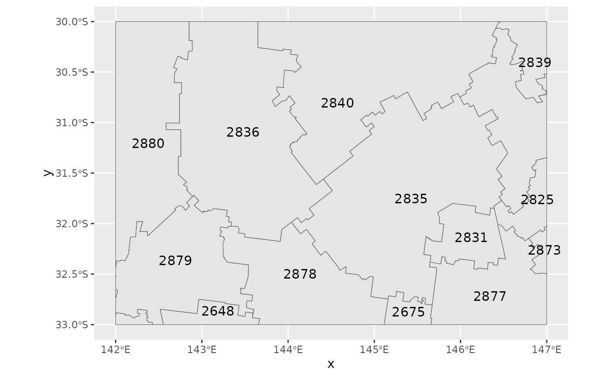
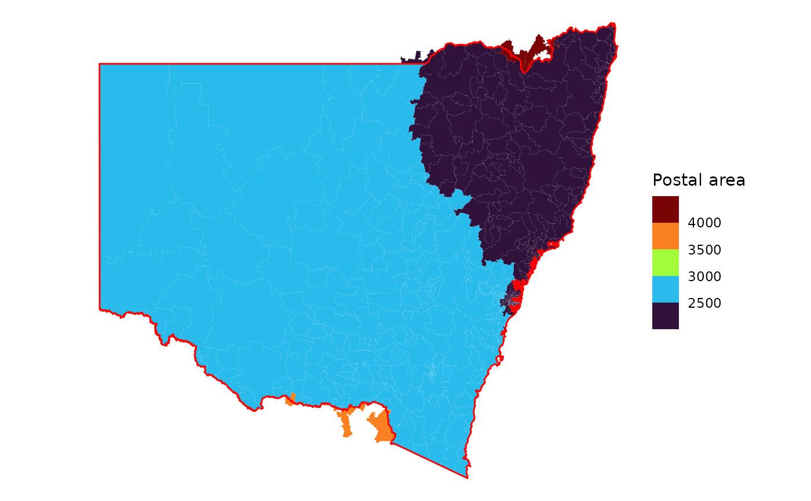
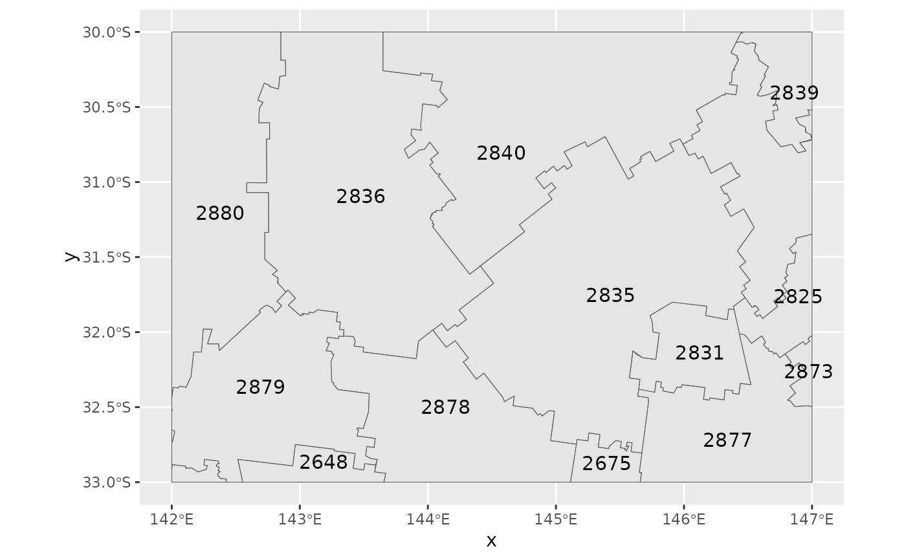
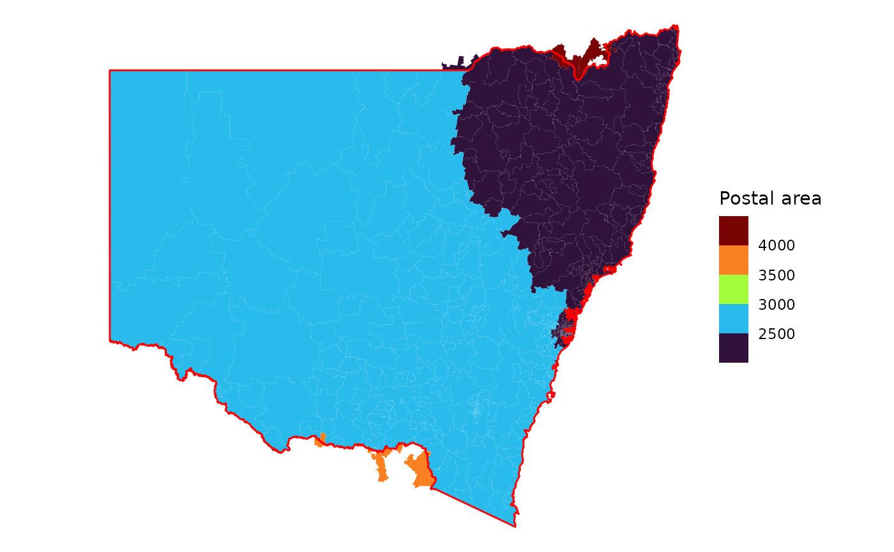

These include the Unincorporated Far West Region.
lga_nsw excludes Jervis Bay Territory and the ACT.
poa_nsw includes both territories and some postal areas extend past the
state boundary.
Format
An object of class sf (inherits from tbl_df, tbl, data.frame) with 131 rows and 9 columns.
An object of class sf (inherits from tbl_df, tbl, data.frame) with 644 rows and 7 columns.
Source
Australian Bureau of Statistics. "Australian Statistical Geography Standard (ASGS) Edition 3." ABS, Jul2021-Jun2026 (24 July 2024 update), https://www.abs.gov.au/statistics/standards/australian-statistical-geography-standard-asgs-edition-3/jul2021-jun2026, accessed 29 July 2024.
The original dataset is published under the Creative Commons Attribution 4.0 International licence, © Commonwealth of Australia 2021.
Details
The geometries have been simplified with a tolerance of 750 m to reduce the level of detail.
Functions
lga_nsw: Local Government Area boundaries of New South Wales.poa_nsw: Postal area boundaries of New South Wales.
Examples
library(ggplot2)
ggplot(lga_nsw) + geom_sf(aes(fill = LGA_NAME_2024), show.legend = FALSE)
 library(sf)
#> Linking to GEOS 3.12.1, GDAL 3.8.4, PROJ 9.4.0; sf_use_s2() is TRUE
sf_use_s2(FALSE)
#> Spherical geometry (s2) switched off
# cut out part of the postcode dataset (it's quite large)
bbox <- st_bbox(c(xmin = 142, xmax = 147, ymin = -33, ymax = -30)) |>
st_as_sfc(crs = crs_gda2020())
st_crop(poa_nsw, bbox) |>
ggplot() +
geom_sf() +
geom_sf_text(aes(label = POA_CODE_2021), size = 4)
#> although coordinates are longitude/latitude, st_intersection assumes that they
#> are planar
#> Warning: attribute variables are assumed to be spatially constant throughout all geometries
#> Warning: st_point_on_surface may not give correct results for longitude/latitude data

# some postcodes extend past the state boundary
ggplot(nswgeo::poa_nsw) +
geom_sf(aes(fill = as.integer(POA_NAME_2021)), colour = NA) +
geom_sf(fill = NA, colour = "red", linewidth = .5, data = nswgeo::nsw) +
scale_fill_viridis_b("Postal area", option = "H") +
theme_void()

library(sf)
#> Linking to GEOS 3.12.1, GDAL 3.8.4, PROJ 9.4.0; sf_use_s2() is TRUE
sf_use_s2(FALSE)
#> Spherical geometry (s2) switched off
# cut out part of the postcode dataset (it's quite large)
bbox <- st_bbox(c(xmin = 142, xmax = 147, ymin = -33, ymax = -30)) |>
st_as_sfc(crs = crs_gda2020())
st_crop(poa_nsw, bbox) |>
ggplot() +
geom_sf() +
geom_sf_text(aes(label = POA_CODE_2021), size = 4)
#> although coordinates are longitude/latitude, st_intersection assumes that they
#> are planar
#> Warning: attribute variables are assumed to be spatially constant throughout all geometries
#> Warning: st_point_on_surface may not give correct results for longitude/latitude data

# some postcodes extend past the state boundary
ggplot(nswgeo::poa_nsw) +
geom_sf(aes(fill = as.integer(POA_NAME_2021)), colour = NA) +
geom_sf(fill = NA, colour = "red", linewidth = .5, data = nswgeo::nsw) +
scale_fill_viridis_b("Postal area", option = "H") +
theme_void()
